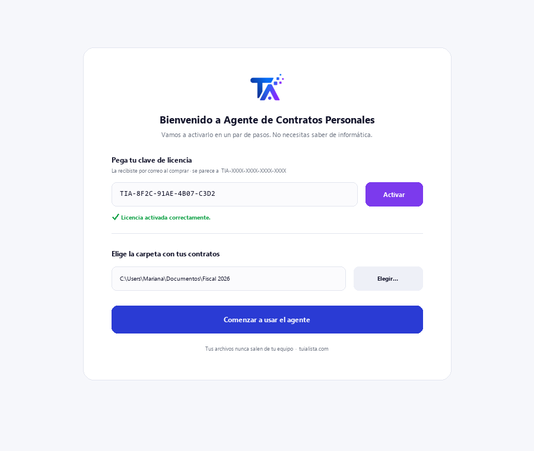
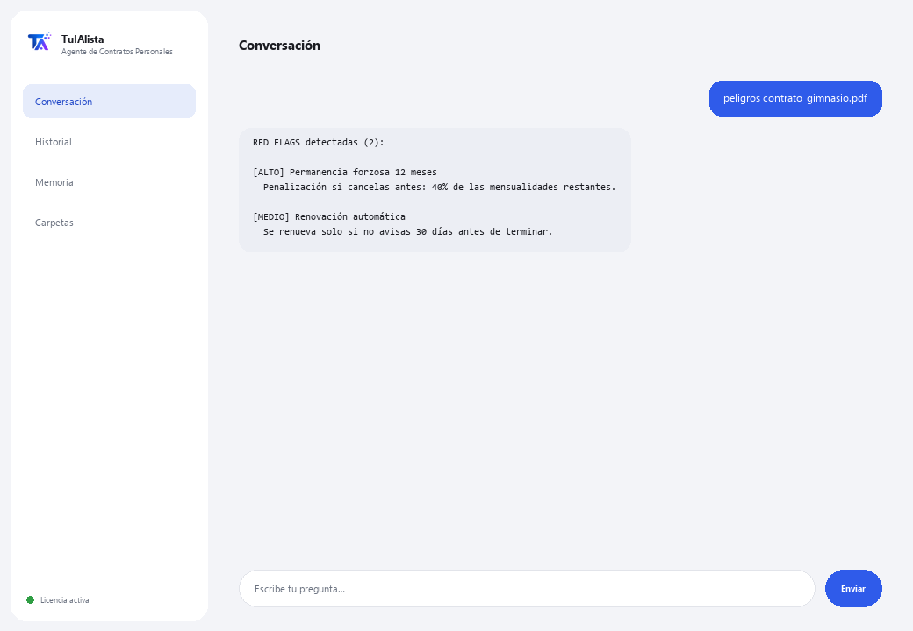

Agente de Contratos Personales
Te explica en palabras simples cualquier contrato que estés a punto de firmar y te avisa de las cláusulas que te pueden perjudicar.
¿Qué resuelve y qué necesitas?
Un abogado cobra entre $100 y $300 por revisar un contrato. Este agente lo hace al instante, las veces que quieras, con privacidad total, para los contratos del día a día: arrendamiento, telefonía, gimnasio, crédito, un trabajo.
- Necesitas: tu clave de licencia (TIA-XXXX-XXXX-XXXX-XXXX) y el contrato (o la carpeta con tus contratos). Nada de Python ni conocimientos técnicos.
- Primer resultado en menos de 5 minutos: instalas, activas, cargas tu contrato con cargar y corres peligros para ver qué cláusulas revisar.
- Tu contrato nunca sale de tu computadora — el análisis corre localmente.
soporte@tuialista.com o entra a tuialista.com/soporte — normalmente respondemos el mismo día hábil.1 Qué hace este agente
Tú le señalas el contrato (o la carpeta con tus contratos) y él:
- Lo explica en lenguaje cotidiano: qué firmas, a qué te comprometes, cuánto pagas y por cuánto tiempo.
- Detecta cláusulas peligrosas para el consumidor (renovación automática, permanencia forzosa, penalizaciones, aumentos de precio unilaterales, cargos ocultos, domiciliación, cesión de datos, intereses altos...).
- Lista tus obligaciones concretas (qué debes hacer, cuándo y cuánto).
- Extrae todos los costos y estima el costo total si cumples el contrato completo.
- Explica cómo y cuándo puedes cancelar y qué te cuesta.
- Sugiere preguntas que deberías hacer antes de firmar.
El resultado: firmas entendiendo de verdad lo que aceptas.
2 Instalación (2 minutos)
Para Windows. No hace falta internet permanente ni subir nada a la nube.
Baja el instalador desde tuialista.com/descargar (agente Contratos Personales) y ábrelo. Crea un acceso directo en tu escritorio con el logo — no requiere Python ni terminal.
Doble clic al ícono nuevo. Pega tu clave de licencia (te llegó por correo al comprar) y pulsa Activar. Verás una palomita verde cuando sea válida.
Selecciona la carpeta con tus contratos y pulsa Comenzar a usar el agente. La próxima vez arranca directo — recuerda tu clave y tu carpeta.

3 Cómo usarlo
El agente abre una ventana de chat, como una app de mensajería — no es una pantalla negra de programador. Primero cargas el contrato, y luego escribes cada pedido en el mismo cuadro de texto:

> cargar <archivo>Carga el contrato. Después puedes usar los demás comandos con ese contrato. Ej.: cargar contrato_gimnasio.pdf.
> explica <archivo>La explicación clara: qué es el contrato, a qué te comprometes, qué te pueden cobrar extra, cuándo termina y cómo salir.
> peligros <archivo>Cláusulas que te pueden perjudicar, clasificadas por nivel (ALTO / MEDIO), con el fragmento del contrato donde aparecen. Es la única acción que funciona 100% local, sin IA.
> obligaciones <archivo>Lista concreta: qué, cuándo y cuánto (ej.: “Pagar $699 mensuales los primeros 5 de cada mes por 12 meses”).
> costos <archivo>Mensualidad, inscripción, depósitos, penalizaciones, intereses, IVA... y el costo total estimado si cumples el contrato completo.
> cancelar <archivo>Si puedes cancelar cuando quieras o hay plazo mínimo, cómo se cancela, con cuánta anticipación avisar y qué te cobran.
> preguntas <archivo>Preguntas concretas que deberías hacer antes de firmar.
> ¿pregunta libre?Con un contrato cargado, pregunta lo que quieras, ej.: ¿me pueden subir la mensualidad durante el contrato?
> salirTermina la sesión (también funciona exit).
4 Ejemplos de uso común
Antes de firmar un gimnasio
cargar contrato_gimnasio.pdf → explica contrato_gimnasio.pdf → peligros contrato_gimnasio.pdf
Entender un crédito
costos contrato_credito.pdf → cancelar contrato_credito.pdf
Prepararte con preguntas
preguntas contrato_arrendamiento.pdf
Una duda puntual
¿qué pasa si me quiero salir antes de los 18 meses?
5 Preguntas frecuentes
¿Mi contrato se sube a internet?
¿Qué formatos acepta?
¿Esto reemplaza a un abogado?
¿Cómo detecta las cláusulas peligrosas?
¿El costo total que calcula es exacto?
¿Guarda mis contratos?
¿En qué idioma responde?
¿Lee un PDF escaneado?
¿Puedo analizar varios contratos?
¿Modifica mi contrato?
6 Solución de problemas
No lee un .pdf o .docx
Dice que no pudo leer el contrato
No detecta una cláusula que sé que está
Dice “Licencia no válida” o pide reconectar
“No hay proveedores de IA configurados”
¿Ninguna de estas soluciones resolvió tu problema? Escríbenos directamente — con gusto lo revisamos contigo.
soporte@tuialista.com o entra a tuialista.com/soporte — normalmente respondemos el mismo día hábil.7 Privacidad y confidencialidad
Tu contrato nunca sale de tu computadora.
- El agente lee y analiza el contrato localmente, en tu propio equipo. No lo sube a ningún servidor ni lo comparte con nadie.
- La detección de cláusulas peligrosas (peligros) ocurre 100% en tu máquina.
- Lo único que viaja por internet es: (1) una comprobación de que tu licencia está activa — que no incluye tu contrato —, y (2) para las explicaciones y preguntas, se envía un fragmento del contrato (hasta unos 7,000 caracteres) al motor de IA para redactar la respuesta.